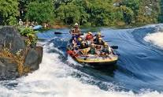

Tourist Guide
Dandeli river rafting

Dandeli is a City in Uttara Kannada district of Karnataka, India, in the Western Ghats region. The Kali River or Kali nadi is a river flowing through Uttara Kannada district of Karnataka state in India. The river rises near Diggi, a small village in Uttar Kannada district. The river is the lifeline to some 4 lakh people in the Uttara Kannada district and supports the livelihoods of tens of thousands of people including fishermen on the coast of Karwar. There are many dams built across this river for the generation of electricity. One of the important dams build across Kali river is the Supa Dam at Ganeshgudi. The river runs 184 kilometers before joining Arabian Sea.
Significant and picturesque, the Sadashivgad fort is now a popular tourist destination located by the coastal highway Kali river bridge, which has been built above the confluence of the river and the Arabian Sea.